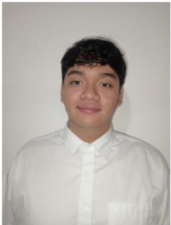

Escasez y elección
Si una pyme destina Q 600 a respaldos o autenticación, renuncia a otros usos de ese dinero. La conveniencia depende del costo frente a lo que protege, no de que la medida sea "barata".
Análisis microeconómico de costos y prevención, y estudio técnico de la propuesta CiberCosto Pyme GT.
Consulta el documento completo de la investigación.
....
Cómo valorar en quetzales lo que puede costarle un ciberataque a una pyme y cómo priorizar la prevención cuando el presupuesto es limitado.
La investigación analiza los costos que podrían generar los ciberataques en pymes comerciales de Guatemala y examina una alternativa para priorizar acciones preventivas. Combina revisión documental, un modelo microeconómico por escenarios y un protocolo de estudio de casos no probabilístico, usando el marco NIST CSF 2.0 y la clasificación empresarial del MINECO.
Las pymes dependen cada vez más de lo digital, pero rara vez saben cuánto les costaría un incidente.
Registrar ventas, organizar inventarios, atender clientes y guardar documentos genera productividad, pero abre la puerta a interrupciones, pérdida de acceso a archivos, engaños de pago y exposición de información. Un incidente no es solo el gasto de reparar un equipo: afecta el flujo de caja, la continuidad comercial y el tiempo del personal.
¿Qué costos económicos directos e indirectos pueden asociarse con escenarios de ciberataque relevantes para pymes comerciales del municipio de Guatemala, y cómo pueden utilizarse estas estimaciones para priorizar medidas de ciberseguridad dentro de un presupuesto limitado?
Analizar, mediante revisión documental, modelación microeconómica y un estudio de casos propuesto para ocho semanas, los costos potenciales y las condiciones de prevención de ciberataques en tres pymes comerciales del municipio de Guatemala, para fundamentar criterios de priorización económica y evaluar la pertinencia de CiberCosto Pyme GT.
| Dimensión | Delimitación |
|---|---|
| Geográfica | Municipio de Guatemala para el estudio de casos; sin inferencia nacional. |
| Sectorial | Pymes de comercio minorista con computadora, correo, inventario o ventas digitales. |
| Muestra | Intencional: 3 empresas voluntarias (E01, E02, E03), condicionada a clasificación oficial y acceso. |
| Temporal | Ocho semanas tras la aprobación; no significa que ya haya comenzado. |
| Exclusiones | Auditorías certificadas, escaneo invasivo, explotación de vulnerabilidades, phishing real simulado, monitoreo permanente y resultados causales de ahorro. |
Cada quetzal en prevención tiene un costo de oportunidad frente a inventario, personal o publicidad.
Si una pyme destina Q 600 a respaldos o autenticación, renuncia a otros usos de ese dinero. La conveniencia depende del costo frente a lo que protege, no de que la medida sea "barata".
No se suman "ventas perdidas" completas y "margen perdido" a la vez. Una compra diferida que luego se realiza no es venta perdida.
Una etiqueta "alto" no equivale a 70 %. Para el análisis financiero se necesitan frecuencias históricas o rangos hipotéticos visibles con sensibilidad.
Restauración, apoyo técnico contratado, sustitución urgente de recursos y transferencias fraudulentas no recuperadas.
Margen de contribución no generado, tiempo improductivo adicional y otras alteraciones verificadas. El daño reputacional se describe, pero no se convierte en quetzales sin método defendible.
Cambia los números y mira cómo cambia la decisión. Los valores iniciales son los del ejemplo hipotético de la investigación (Q 8,000 de incidente, Q 600 de medida).
⚠ Todos los valores son hipótesis de demostración. El resultado no es un ahorro ocurrido ni una rentabilidad demostrada: indica qué pasa si se cumplen los supuestos.
| Probabilidad sin / con control | Reducción (p.p.) | Beneficio neto esperado |
|---|
Con CTI = Q 8,000 y CPA = Q 600, el punto de equilibrio es 600 / 8,000 = 7.5 puntos porcentuales. Si la reducción real fuera menor, el beneficio esperado sería negativo bajo ese modelo; aun así, los controles esenciales pueden justificarse por continuidad, contratos u otros costos no monetizados.
Integrantes que participan en la investigación.
